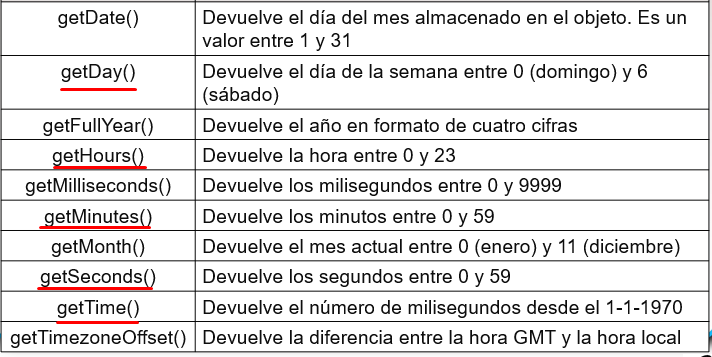
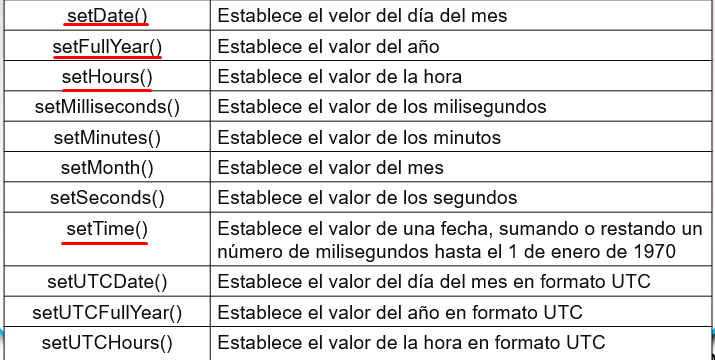
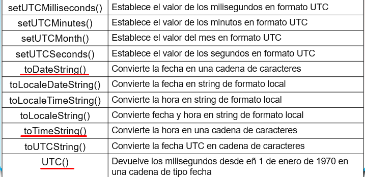
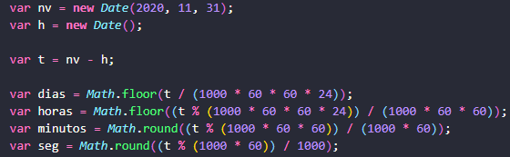

Objeto Date
Métodos de lectura

Métodos de escritura
Se suele utilizar el constructor del objeto Date() para crear una fecha. new Date(2020, 11, 31);

Algunos ejemplos de ejercicios:
Para saber cuanto queda en horas, minutos y segundos, desde actual hasta una fecha dada.